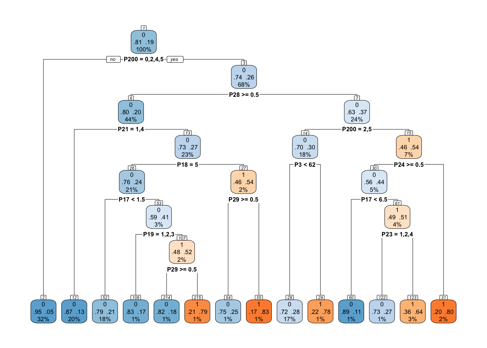
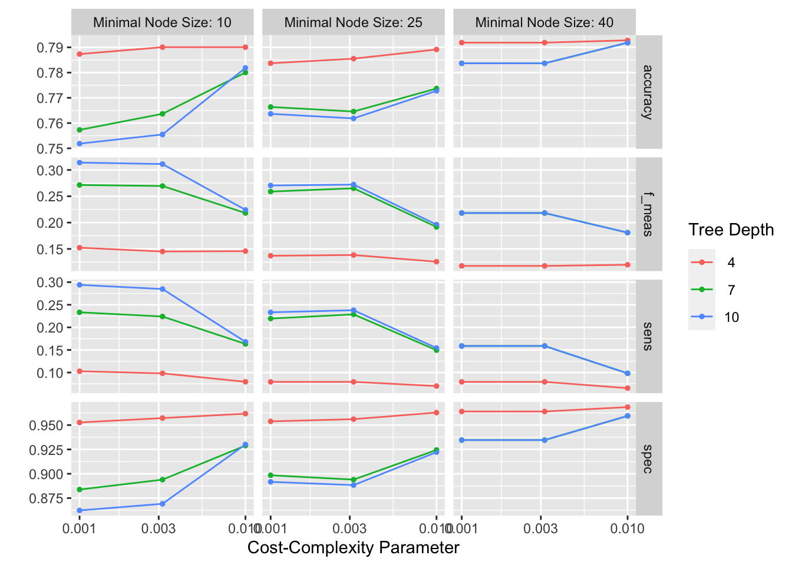
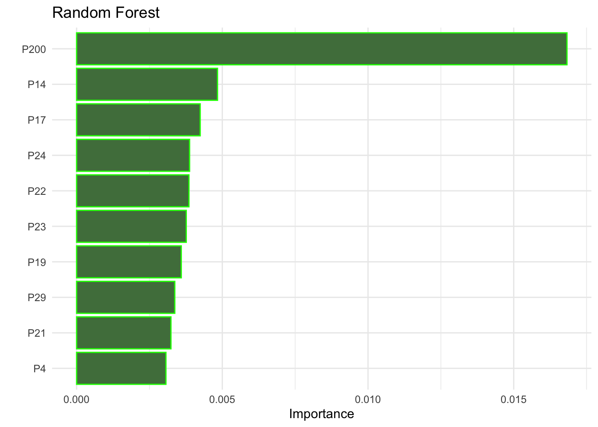
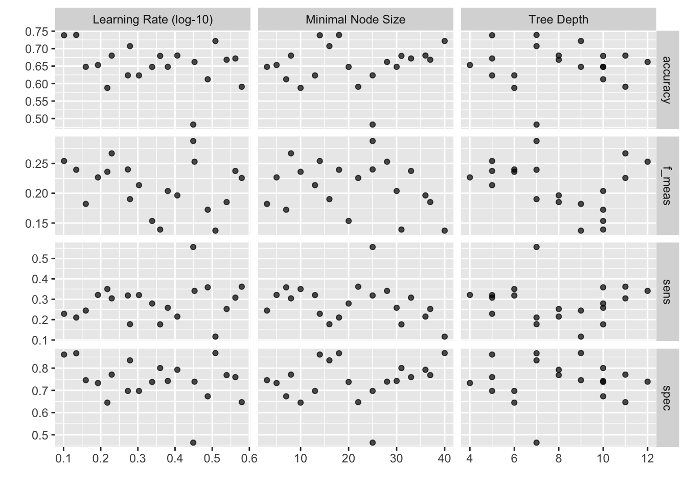

library(tidymodels)
library(gt)
library(dataUMworkshop)
tidymodels_prefer()Imbalanced data in Machine Learning Modeling
Level I: The Dawn of Regression
Estimating a model in R
There are many ways to estimate models in R
lm(formula, data, ...)stan_glm(formula, data, family= "gaussian",...)glmnet(x=matrix, y=vector, family="gaussian",...)
Tip
library(): Load the tidymodels package into R.
tidymodels_prefer(): Sets the tidymodels package as the preferred one for modeling functions in R.
lm(): Fits a linear regression model to the data.
stan_glm(): Fits a regression model using the stan package.
glmnet(): Fits a regression model using Lasso or Ridge regularization.
Tidymodels provides a general syntax for estimating models
- Specify the type of model
- linear_reg(), logistic_reg(), decision_tree()
- Specify the type of outcome
- Regression for continuous outcomes
- Classification: multinomial, ordinal, binary
linear_reg() |>
set_engine("lm")
linear_reg() |>
set_engine("glmnet")
linear_reg() |>
set_engine("stan")
Tip
linear_reg(): Creates a linear regression model specification in the tidymodels framework.
set_engine(): Sets the calculation engine for a model specification object. It is set to “lm” for the first call to linear_reg(), “glmnet” for the second call, and “stan” for the third.
To estimate a model:
1. Specify the model
lm_model <-
logistic_reg() %>%
set_engine("glm", family = "binomial") |>
set_mode("classification")Specify a logistic regression model. Additionally, the modeling mode is set to “classification” to indicate that it is a categorical variable. The result is stored in the lm_model object.
2. Estimate the model
Tip
data(dataUMworkshop)
# The outcome variable is specified as a factor
the_data <- dataUMworkshop |>
select(-outcome_count) |>
mutate(outcome = factor(outcome)) |>
rename(P200 = P2)lm_results <- lm_model |>
fit(outcome ~ ., data = the_data)Here the model is fitted-estimated using the fit() function. The response variable (outcome) and the predictors (.) are specified and the the_data object is used as a database.
3. Check the model results
lm_results |> tidy()# A tibble: 41 × 5
term estimate std.error statistic p.value
<chr> <dbl> <dbl> <dbl> <dbl>
1 (Intercept) -0.851 1.10 -0.773 0.440
2 P2001 -2.08 0.546 -3.81 0.000141
3 P2002 0.754 0.272 2.77 0.00553
4 P2003 -1.44 0.320 -4.49 0.00000707
5 P2004 -0.142 0.281 -0.507 0.612
6 P2005 -0.0850 0.445 -0.191 0.849
7 P3 -0.0153 0.0118 -1.30 0.192
8 P4 0.0137 0.0205 0.670 0.503
9 P13 -0.388 0.186 -2.08 0.0374
10 P142 -0.209 0.382 -0.546 0.585
# ℹ 31 more rowslm_results |>
glance() |>
gt()| null.deviance | df.null | logLik | AIC | BIC | deviance | df.residual | nobs |
|---|---|---|---|---|---|---|---|
| 1356.908 | 1375 | -573.3018 | 1228.604 | 1442.908 | 1146.604 | 1335 | 1376 |
Tip
tidy():This function is used to convert the results of a model into a “tidy” data frame that displays the model coefficients, standard errors, t-values, and p-values for each independent variable.glance():This function is used to summarize the results of a model as global model statistics, for example, adjusted R-squared, the AIC, and the BIC.
lm_results |> tidy(exp = TRUE, conf.int = TRUE)tidy(exp=TRUE, conf.int=TRUE): This function is used to convert the results of a model into a “tidy” data frame that displays the model coefficients, standard errors, t-values, and t-values. p for each independent variable. The exp and conf.int arguments are used to include confidence intervals and exponents in the results
Metrics to evaluate the model
Accuracy: This is how often the model makes correct predictions. It’s a simple ratio of the number of correct predictions to the total number of predictions.
Sensitivity: Also known as “True Positive Rate.” It measures how well the model identifies positive outcomes. In other words, it’s the percentage of actual positives that the model correctly predicts.
Specificity: Also known as “True Negative Rate.” This is about how well the model identifies negative outcomes. It tells us the percentage of actual negatives that the model correctly predicts.
Precision: This tells us how many of the model’s positive predictions are actually correct. It’s a ratio of true positive predictions to all positive predictions (including false positives).
Recall: This is the same as sensitivity. It’s about how many of the actual positive cases the model can correctly identify.
F-measure: This score combines precision and recall into a single number. It helps balance the trade-off between these two metrics. A higher F-measure means better model performance.
Kappa Coefficient: Kappa is about how much better the model is than random guessing. It compares the model’s accuracy with what would be expected by chance. A higher Kappa means the model is much better than just guessing.

augmented_results <- lm_results |>
augment(the_data)
accuracy(augmented_results,
truth = outcome,
estimate = .pred_class
) |> pretty_table()| Metric | Estimate |
|---|---|
| Accuracy | 0.818 |
sens(augmented_results,
truth = outcome,
estimate = .pred_class,
event_level = "second"
) |> pretty_table()| Metric | Estimate |
|---|---|
| Sensitivity | 0.179 |
spec(augmented_results,
truth = outcome,
estimate = .pred_class,
event_level = "second"
) |> pretty_table()| Metric | Estimate |
|---|---|
| Specificity | 0.972 |
f_meas(augmented_results,
truth = outcome,
estimate = .pred_class,
event_level = "second"
) |> pretty_table()| Metric | Estimate |
|---|---|
| F1 | 0.277 |
Level II: Into the Depths of Data
What do we need the data for? We need the data to
- Estimate values
- Select models
- Tune the models (tunning)
- Evaluate the models
How can we spend the data in a way that is efficient for all these steps?
First ring: divide the data into two groups, some data to train the model and another to test it.
The Two Paths of Destiny
In an age long past, when the world was still uncharted, the First Ring emerged, gleaming with the promise of unexplored knowledge. It was said to hold the power to split the fabric of reality into two distinct paths: one leading through the verdant forests of Training, lush with learning and growth, and the other winding into the misty valleys of Testing, where truth is revealed in the shadows. Those who embark on this journey, much like the brave heroes of old, are fated to traverse these paths, each step a new chapter in their quest for wisdom.
Split the data
- Split the data into two sets
- Training
- Most of the data (70%, 80%?)
- Here the model is adjusted
- Test
- A small data set
- Here the final model will be evaluated
- Training
Test data is used only once, if it is used more than once it becomes part of the training process.
Warning
The division of the data is done at the level of the independent unit of observation.
Avoid contamination of test data (information leakage) at all costs, that is, information cannot be leaked from one database to the other.
So, one can create two databases with for example 80% and 20% of the data. But how do you do this in R?
set.seed(193945)
split_data <- initial_split(the_data, prop = 0.8, strata = "outcome")
training_data <- training(split_data)
test_data <- testing(split_data)The strata option is so that the training and test data have the same distribution of the variable score
Sometimes random sample selection is not simple, for example when there is a time component to the data.
Tip
set.seed() - Used to set a seed for random number generation in R. In this case, it is used to set the seed to 193945, ensuring that the results are reproducible. This is especially important when working with machine learning models, as results can vary depending on the seed used for random number generation.
initial_split(): This function is used to split a data frame into training and test sets. In this case, it is used to split the “the_data” object into training and test sets in an 80/20 ratio, and stratifying by the “outcome” column.
training(): This function is used to extract the training set from an object created with the initial_split() function. In this case, it is used to extract the training set from the “split_data” object.
testing(): This function is used to extract the test set from an object created with the initial_split() function. In this case, it is used to extract the test set from the “split_data” object.
Now, we can repeat the previous model estimation steps, but we will use the training data.
2. Estimate the model
Model Estimation: The lm_model() and fit() function is used to fit a linear regression model. The outcome ~ . indicates that the score variable is being modeled as a function of all the other variables in the “training_data” dataframe.
lm_results <- lm_model |>
fit(outcome ~ ., data = training_data)3. Model results
View model results: The tidy function is used to obtain a clean and tidy summary of the model results.
lm_results |>
tidy()# A tibble: 41 × 5
term estimate std.error statistic p.value
<chr> <dbl> <dbl> <dbl> <dbl>
1 (Intercept) -0.244 1.22 -0.199 0.842
2 P2001 -1.98 0.555 -3.56 0.000368
3 P2002 0.696 0.300 2.32 0.0204
4 P2003 -2.02 0.390 -5.19 0.000000208
5 P2004 -0.189 0.308 -0.613 0.540
6 P2005 -0.378 0.502 -0.752 0.452
7 P3 -0.0243 0.0132 -1.84 0.0664
8 P4 0.00650 0.0228 0.285 0.776
9 P13 -0.257 0.210 -1.22 0.221
10 P142 -0.482 0.449 -1.07 0.283
# ℹ 31 more rowsPredictions: The augment function is used to obtain the predictions of the model on the training data.
lm_augmented_results <- lm_results |>
augment(training_data)Metrics: The custom_metrics function is used to calculate the accuracy, sensitivity, specificity, and F-measure of the model on the training data. The results are stored in the “lm_metrics” object.
custom_metrics <- metric_set(accuracy, sens, spec, f_meas)
custom_metrics(lm_augmented_results,
truth = outcome,
estimate = .pred_class,
event_level = "second"
) |> pretty_table()| Metric | Estimate |
|---|---|
| Accuracy | 0.817 |
| Sensitivity | 0.168 |
| Specificity | 0.974 |
| F1 | 0.264 |
We can save them on a table. The results are stored in the “lm_results” object.
lm_metrics_training <- custom_metrics(lm_augmented_results,
truth = outcome,
estimate = .pred_class,
event_level = "second"
) |>
mutate(model = "lm")Can we improve the model?
Level III: Journey towards the Arcane Model
Decision trees
Decision trees are a type of machine learning model used to solve classification and regression problems. The goal is to make decisions based on questions and answers asked of the data to reach a conclusion or prediction. In a decision tree, each point or “node” represents a characteristic of the data we are studying. Each “branch” of the tree shows a possible response to that characteristic.
- Model specification: A decision tree model is specified. The
rpartpackage is used and the mode is set to classification.
tree_spec <-
decision_tree() |>
set_engine("rpart") |>
set_mode("classification")- Model fitting: The decision tree model is fitted using the formula
outcome ~ ., which means that score is being modeled as a function of all the other variables in the training_data dataframe.
tree_results <- tree_spec |>
fit(outcome ~ ., data = training_data)- Decision tree display: The fitted model is extracted from the fitting result and displayed using the
tree_diagram()function of the treemisc package.
cart_tree_fit <- tree_results$fit
treemisc::tree_diagram(cart_tree_fit, roundint = FALSE)
How do you decide where to cut data in a decision tree? see this
Let’s calculate the metrics
tree_metrics_training <- tree_results |>
augment(training_data) |>
custom_metrics(
truth = outcome,
estimate = .pred_class,
event_level = "second"
) |>
mutate(model = "tree")
rbind(tree_metrics_training, lm_metrics_training) |>
pivot_wider(names_from = model, values_from = .estimate) |>
pretty_table()| Metric | Tree | Lm |
|---|---|---|
| Accuracy | 0.843 | 0.817 |
| Sensitivity | 0.290 | 0.168 |
| Specificity | 0.976 | 0.974 |
| F1 | 0.418 | 0.264 |
CART with hyperparameters
Hyperparameters are model-specific values that can be adjusted and that allow you to control the training process of a model.
tree_spec_hyp_manual <-
decision_tree(min_n = 5, cost_complexity = 0.001) |>
set_mode("classification") |>
set_engine("rpart")In this case, two hyperparameters are being indicated for the decision tree:
min_n: It is the minimum number of observations required to divide a node in a decision tree. A higher value of min_n implies that the tree will be shallower, since more samples will be required to perform a split at each node.
cost_complexity: It is a regularization parameter. It is a measure of the penalty that is applied to the tree based on its complexity. A higher value of cost_complexity implies a stronger penalty on the complexity of the tree, leading to a smaller and shallower tree.
Now to estimate the model
tree_spec_hyp_manual_results <- tree_spec_hyp_manual |>
fit(outcome ~ ., data = training_data)We can get the predictions
tree_spec_hyp_manual_training <- tree_spec_hyp_manual_results |>
augment(training_data) |>
custom_metrics(,
truth = outcome,
estimate = .pred_class,
event_level = "second"
) |>
mutate(model = "Tree hyp manual")And finally, we can compare the models
rbind(
lm_metrics_training,
tree_metrics_training,
tree_spec_hyp_manual_training
) |>
pivot_wider(names_from = model, values_from = .estimate) |>
pretty_table()| Metric | Lm | Tree | Tree_hyp_manual |
|---|---|---|---|
| Accuracy | 0.817 | 0.843 | 0.939 |
| Sensitivity | 0.168 | 0.290 | 0.818 |
| Specificity | 0.974 | 0.976 | 0.968 |
| F1 | 0.264 | 0.418 | 0.839 |
But all this happens in the training data!
Why is it bad?
We can create a model that has zero errors in the training data. But how do we know that the model is good?
We could evaluate the model in unseen data, but we only have one test data set.
# Use the test data to predict the score using the logistic regression model
lm_predictions_test <- lm_model |>
last_fit(outcome ~ ., split_data,
metrics = custom_metrics,
control = control_resamples(event_level = "second")
) |>
collect_metrics() |>
mutate(model = "lm")
# Use the test data to predict the score using the decision tree model
tree_prediction_test <- tree_spec |>
last_fit(outcome ~ ., split_data,
metrics = custom_metrics,
control = control_resamples(event_level = "second")
) |>
collect_metrics() |>
mutate(model = "Tree")
# Use the test data to predict the score using the hyperparameter decision tree model
tree_hyp_predictions_test <- tree_spec_hyp_manual |>
last_fit(outcome ~ ., split_data,
metrics = custom_metrics,
control = control_resamples(event_level = "second")
) |>
collect_metrics() |>
mutate(model = "Tree Hype")
# Join the results
all_models_test <-
rbind(lm_predictions_test, tree_prediction_test, tree_hyp_predictions_test) |>
pivot_wider(names_from = model, values_from = .estimate)
all_models_test |>
pretty_table()| Metric | Lm | Tree | Tree_hype |
|---|---|---|---|
| Accuracy | 0.815 | 0.801 | 0.674 |
| Sensitivity | 0.222 | 0.167 | 0.259 |
| Specificity | 0.959 | 0.955 | 0.775 |
| F1 | 0.320 | 0.247 | 0.237 |
How are we going to choose the best model if we can only evaluate one model on the test data?
Second ring: divide the training data into two groups, one for training and one for validation, so that we can estimate the model error before using the test data.
The Mirror of Fates
The Second Ring was forged in the hidden realms, where magic and mystery intertwine. It was no ordinary artifact, for it held a mirror reflecting not just images but destinies. In the hands of the learned, this ring divided the waters of Training, creating a silent pool of Validation, serene yet profound. Here, seers and sages could gaze into the depths, discerning the hidden strengths and weaknesses of their creations, much like the ancient oracles who, in their sacred groves, saw truths beyond the ken of mortals.
level IV: The Paths of Validation
Cross Validation
Suppose we are working on a classification problem and we have a data set with 1000 observations. We want to evaluate the performance of a logistic regression model using k-fold cross-validation.
Step-by-step k-fold cross-validation process:
Divide the data set: First, we divide the data set into k subsets (folds) of equal size. In this example, we choose k=10, which means we divide the data set into 10 subsets of 100 records each.
Train and evaluate the model: Then, we do the following for each of the k subsets:
to. We take one subset as the test (validation) set and the remaining k-1 subsets as the training set. For example, in the first iteration, we use the first subset as the test set and subsets 2 to 10 as the training set.
We train the logistic regression model using the training set.
We evaluate the performance of the model on the test set using an appropriate metric, such as precision, completeness, or F1-score. We write down the result of the metric for this iteration.
Averaging results: After completing k iterations, we average the metric results for all iterations. This means providing us with a more robust estimate of the model’s performance since the model has been evaluated on different subsets of the data set.
First path: cross-validation object to estimate performance
The first thing we are going to need is to create an object in R that contains the data organized in such a way that we can implement cross-validation. For this, we are going to use the vfold_cv() function from the rsample package.
crossvalidation <-
vfold_cv(training_data,
v = 5, # number of boxes
strata = "outcome"
) # variable to stratifylm_model_resamples <- lm_model |>
fit_resamples(outcome ~ ., crossvalidation,
metrics = custom_metrics,
control = control_resamples(event_level = "second")
) |>
collect_metrics() |>
mutate(model = "lm_resamples")
tree_spec_resamples <- tree_spec |>
fit_resamples(outcome ~ ., crossvalidation,
metrics = custom_metrics,
control = control_resamples(event_level = "second")
) |>
collect_metrics() |>
mutate(model = "tree_resamples")
tree_spec_hyp_resamples <- tree_spec_hyp_manual |>
fit_resamples(outcome ~ ., crossvalidation,
metrics = custom_metrics,
control = control_resamples(event_level = "second")
) |>
collect_metrics() |>
mutate(model = "tree_hyp_resamples")
all_models_resamples <-
rbind(lm_model_resamples, tree_spec_resamples, tree_spec_hyp_resamples) |>
pivot_wider(names_from = model, values_from = mean, id_cols = .metric)
all_models_resamples |>
pretty_table()| Metric | Lm_resamples | Tree_resamples | Tree_hyp_resamples |
|---|---|---|---|
| Accuracy | 0.795 | 0.776 | 0.736 |
| F1 | 0.219 | 0.202 | 0.298 |
| Sensitivity | 0.150 | 0.145 | 0.289 |
| Specificity | 0.951 | 0.929 | 0.844 |
Second path: cross-validation object to identify the best model
When specifying a decision tree model, we will indicate that we want different values of the “min_n” and “cost_complexity” hyperparameters to be tested. For that, we are going to use the tune package.
tree_spe_tune <-
decision_tree(
cost_complexity = tune(),
tree_depth = tune(),
min_n = tune()
) |>
set_mode("classification") |>
set_engine("rpart")
Tip
Cost_complexity: Cost_complexity is a regularization parameter. It is a measure of the penalty that is applied to the tree based on its complexity. A higher value of cost_complexity implies a stronger penalty on the complexity of the tree, leading to a smaller and shallower tree. The idea is to find an optimal value of cost_complexity that balances the precision and complexity of the tree, reducing both bias and variance.
Tree_depth (tree depth): Tree_depth refers to the maximum length of the longest path from the root to a leaf in a decision tree. A deeper tree is more complex and can capture more complicated relationships in the data.
Now, let’s specify the search grid. The lookup grid is a table that contains the values to test for each combination of hyperparameters.
tree_grid <- grid_regular(
cost_complexity(range = c(-3, -2)),
tree_depth(range = c(4L, 10L)),
min_n(range = c(10L, 40L))
)The next step is to estimate the performance of the models on the validation data, using the models created with the different combinations of hyperparameters. For this, we are going to use the tune_grid() function from the tune package.
doParallel::registerDoParallel()
set.seed(345)
tree_rs <-
tune_grid(
tree_spe_tune,
outcome ~ .,
resamples = crossvalidation,
control = control_resamples(event_level = "second"),
grid = tree_grid,
metrics = custom_metrics
)
doParallel::stopImplicitCluster()
Tip
doParallel is an excellent package created to facilitate parallel programming in R. Using R in “parallel” allows you to take advantage of the power of computers to save time.
This will give us a table with the results of each model, and we can ask it to show us the combination of hyperparameters that had the best performance.
autoplot(tree_rs)
show_best(tree_rs, metric = "sens")# A tibble: 5 × 9
cost_complexity tree_depth min_n .metric .estimator mean n std_err
<dbl> <int> <int> <chr> <chr> <dbl> <int> <dbl>
1 0.001 10 10 sens binary 0.294 5 0.0471
2 0.00316 10 10 sens binary 0.285 5 0.0422
3 0.00316 10 25 sens binary 0.238 5 0.0482
4 0.001 7 10 sens binary 0.233 5 0.0325
5 0.001 10 25 sens binary 0.233 5 0.0474
# ℹ 1 more variable: .config <chr>Finally, we can select the best model and estimate it with the training data.
best_hyp_tree <- select_best(tree_rs, min_n, metric = "sens")
tree_tuned_final <- finalize_model(tree_spe_tune, best_hyp_tree)
Tip
The finalize_model function allows updating the model specification with the selected hyperparameters.
Now, we go back to doing what we have been doing: estimating the model with the training data.
We already know how to evaluate the model, so let’s do it. For that, we’re going to use the fit_resamples() function, which is going to do a lot of work for us. This function will estimate the model with the training data and calculate the evaluation metrics on the validation data.
# We will need this later to compare the models in the table metrics from training, which is not very useful, but fun.
tree_tuned_training <- tree_tuned_final |>
fit(outcome ~ ., data = training_data) |>
augment(training_data) |>
custom_metrics(,
truth = outcome,
estimate = .pred_class,
event_level = "second"
) |>
mutate(model = "Tree tunned")tree_tuned_resample <- tree_tuned_final |>
fit_resamples(outcome ~ ., crossvalidation,
metrics = custom_metrics,
control = control_resamples(event_level = "second")
) |>
collect_metrics() |>
mutate(model = "Tree tunned")all_models_resamples <-
rbind(
lm_model_resamples,
tree_spec_resamples,
tree_spec_hyp_resamples,
tree_tuned_resample
) |>
pivot_wider(names_from = model, values_from = mean, id_cols = .metric)
all_models_resamples |> pretty_table()| Metric | Lm_resamples | Tree_resamples | Tree_hyp_resamples | Tree_tunned |
|---|---|---|---|---|
| Accuracy | 0.795 | 0.776 | 0.736 | 0.752 |
| F1 | 0.219 | 0.202 | 0.298 | 0.314 |
| Sensitivity | 0.150 | 0.145 | 0.289 | 0.294 |
| Specificity | 0.951 | 0.929 | 0.844 | 0.862 |
Secret ring: trees are very good at learning the distribution of training data, but sometimes, they tend to over-specialize on the data they are trained on. One way to solve this is to make many trees, which we can then average.
Random Forest
We already know why it is Forest, but why is it random?
- Number of predictors used for each tree (mtry)
- Number of observations per tree
The steps are the same, only the model specification changes.
rf_spec <-
rand_forest() |>
set_mode("classification") |>
set_engine("ranger", importance = "permutation")There are some methods to try to identify which variables were most relevant when making the best predictions.
rf_results_training <- rf_spec |>
fit(outcome ~ ., data = training_data)
library(vip)
importance_plot_rf <-
rf_results_training |>
vip() +
ggtitle("Random Forest") +
theme_minimal() +
geom_bar(
stat = "identity",
color = "green", fill = "green", alpha = 0.2
)
importance_plot_rf
Now, fit in resamples and collect metrics.
rf_spec_resamples <- rf_spec |>
fit_resamples(outcome ~ ., crossvalidation,
metrics = custom_metrics,
control = control_resamples(event_level = "second")
) |>
collect_metrics() |>
mutate(model = "Random Forest")
all_models_resamples <-
rbind(
lm_model_resamples,
tree_spec_resamples,
tree_spec_hyp_resamples,
tree_tuned_resample,
rf_spec_resamples
) |>
pivot_wider(names_from = model, values_from = mean, id_cols = .metric) |>
pretty_table()
all_models_resamples| Metric | Lm_resamples | Tree_resamples | Tree_hyp_resamples | Tree_tunned | Random_forest |
|---|---|---|---|---|---|
| Accuracy | 0.795 | 0.776 | 0.736 | 0.752 | 0.803 |
| F1 | 0.219 | 0.202 | 0.298 | 0.314 | 0.055 |
| Sensitivity | 0.150 | 0.145 | 0.289 | 0.294 | 0.023 |
| Specificity | 0.951 | 0.929 | 0.844 | 0.862 | 0.991 |
Level V: The Ancient Conflict: Bias vs. Variance
Bias and variance
These two concepts are crucial to understanding the balance between model complexity and its ability to generalize to new data.
Bias: Bias is the difference between the average prediction of our model and the true value we are trying to predict. Bias, in statistical terms, refers to the systematic difference between the expectation (or average) of the estimates produced by an estimator and the real value of the parameter to be estimated.
- Example: A linear regression model could have high bias if the actual data has a nonlinear relationship.
- Implications: A model with high bias is too simple and does not capture the underlying structure of the data. This leads to poor performance on the training and test set.
Variance: Variance is the amount of variability in the model’s predictions for a piece of data. A model with high variance is very sensitive to small variations in the training data, which can result in overfitting. That is, the model fits the training data very well but performs poorly on unseen or test data.
Example: A very deep decision tree model could have high variance since it is very sensitive to small variations in the training data.
Implications: A model with high variance tends to overfit the training data, resulting in good performance on the training set but poor performance on the test set.
How do we know if our model has high bias or high variance?
Third Ring: the balance between bias and variance is the key to the power of the model.
The Balance of Light and Shadow
In the great halls of knowledge, the Third Ring was revered as the most elusive and powerful. It was the embodiment of the eternal struggle between Light and Shadow, an artifact that sought the perfect equilibrium. In the hands of a master, it could weave together the threads of Variance and Bias, creating a tapestry as balanced and harmonious as the cycle of day and night. The quest for this balance was akin to a legendary saga, where heroes journeyed through realms of dazzling brilliance and profound darkness, seeking the ancient wisdom that would bring peace to the land.
Level VI: The Final Battle: resampling
The basic idea behind resampling methods is to repeatedly draw samples from a training set and refit a model of interest on each sample in order to obtain information about the fitted model in different samples. However, resampling methods can be used for other purposes as well, such as estimating the accuracy of a model on unseen data or selecting the appropriate level of flexibility for a model (i.e. crossvalidation). Furthermore, we could use resampling to balance the data. This is what we are going to do now.
The first method we are going to use is downsampling. This method consists of reducing the number of observations in the majority class to match the number of observations in the minority class. This is done by randomly selecting observations from the majority class. This method is used when the data set is very large and the minority class is very small.
We are using the themis package for this task. This implies that we have to use a new type of object called a recipe. A recipe is a set of instructions that tells R how to prepare the data for modeling. The recipe is then used to prepare the data for modeling.
library(themis)
downsampling_rec <-
recipe(outcome ~ ., training_data) |>
step_downsample(outcome)In case you are curious, we can see how the data is reduced.
downsampling_rec |>
prep(retain = TRUE) |>
bake(new_data = NULL) |>
count(outcome)# A tibble: 2 × 2
outcome n
<fct> <int>
1 0 214
2 1 214In tidymodels, there also exist an special object called workflow. It is a set of instructions (yes, like recipies) that lets us to combine different steps of the modeling process.
downsampling_workflow <-
workflow() |> # Create a workflow object
add_recipe(downsampling_rec) |> # Add the recipe to the workflow
add_model(lm_model) # Add the model to the workflow# Fit and Estimates
downsample_fit <- downsampling_workflow |>
fit(data = training_data)but, you already know that evaluating the model in the training data is not the best idea. So, let’s do it again, but now with the validation data.
downsample_fit_resamples <- fit_resamples(downsampling_workflow,
resamples = crossvalidation,
metrics = custom_metrics,
control = control_resamples(event_level = "second")
)
downsample_resamples <- collect_metrics(downsample_fit_resamples) |>
mutate(model = "downsample")And compare everything
all_models_resamples <-
rbind(
downsample_resamples,
lm_model_resamples,
tree_spec_resamples,
tree_spec_hyp_resamples,
tree_tuned_resample,
rf_spec_resamples
) |>
pivot_wider(names_from = model, values_from = mean, id_cols = .metric)
all_models_resamples |> pretty_table()| Metric | Downsample | Lm_resamples | Tree_resamples | Tree_hyp_resamples | Tree_tunned | Random_forest |
|---|---|---|---|---|---|---|
| Accuracy | 0.631 | 0.795 | 0.776 | 0.736 | 0.752 | 0.803 |
| F1 | 0.409 | 0.219 | 0.202 | 0.298 | 0.314 | 0.055 |
| Sensitivity | 0.654 | 0.150 | 0.145 | 0.289 | 0.294 | 0.023 |
| Specificity | 0.625 | 0.951 | 0.929 | 0.844 | 0.862 | 0.991 |
Upsampling
Upsampling is a method that consists of increasing the number of observations in the minority class to match the number of observations in the majority class. This is done by randomly selecting observations from the minority class with replacement. This method is used when the data set is small and the minority class is very small.
upsampling_rec <-
recipe(outcome ~ ., training_data) |>
step_upsample(outcome)
upsampling_rec |>
prep(retain = TRUE) |>
bake(new_data = NULL) |>
count(outcome)# A tibble: 2 × 2
outcome n
<fct> <int>
1 0 886
2 1 886upsampling_workflow <-
workflow() |>
add_recipe(upsampling_rec) |>
add_model(lm_model)let’s fit the model
upsample_fit <- upsampling_workflow |>
fit(data = training_data)Finally, let’s evaluate the model in the validation data
upsample_fit_resamples <- upsampling_workflow |>
fit_resamples(
resamples = crossvalidation,
metrics = custom_metrics,
control = control_resamples(event_level = "second")
)
upsample_resamples <- collect_metrics(upsample_fit_resamples) |>
mutate(model = "upsampling")all_models_resamples <-
rbind(
lm_model_resamples,
downsample_resamples,
upsample_resamples,
tree_spec_resamples,
tree_spec_hyp_resamples,
tree_tuned_resample,
rf_spec_resamples
) |>
pivot_wider(names_from = model, values_from = mean, id_cols = .metric)
all_models_resamples |> pretty_table()| Metric | Lm_resamples | Downsample | Upsampling | Tree_resamples | Tree_hyp_resamples | Tree_tunned | Random_forest |
|---|---|---|---|---|---|---|---|
| Accuracy | 0.795 | 0.631 | 0.658 | 0.776 | 0.736 | 0.752 | 0.803 |
| F1 | 0.219 | 0.409 | 0.419 | 0.202 | 0.298 | 0.314 | 0.055 |
| Sensitivity | 0.150 | 0.654 | 0.626 | 0.145 | 0.289 | 0.294 | 0.023 |
| Specificity | 0.951 | 0.625 | 0.666 | 0.929 | 0.844 | 0.862 | 0.991 |
Final level: the test of the model
Choose one model and test it with the test data.
upsampling_workflow |>
last_fit(split_data,
metrics = custom_metrics,
control = control_resamples(event_level = "second")
) |>
collect_metrics() |>
pretty_table()Warning: Unknown or uninitialised column: `.extracts`.| Metric | Estimate |
|---|---|
| Accuracy | 0.656 |
| Sensitivity | 0.537 |
| Specificity | 0.685 |
| F1 | 0.379 |
THE END
Hiden level
Boosted tree?
library(bonsai)
boost_tree <-
boost_tree(
trees = 500,
tree_depth = tune(),
min_n = tune(),
learn_rate = tune()
) |>
set_engine("lightgbm") |>
set_mode("classification")xgb_grid <- grid_latin_hypercube(
tree_depth(range = c(4L, 12L)),
min_n(),
learn_rate(range = c(0.1, 0.6)),
size = 20
)set.seed(1945)
xgb_tree <-
tune_grid(
boost_tree,
outcome ~ .,
resamples = crossvalidation,
control = control_resamples(event_level = "second"),
grid = xgb_grid,
metrics = custom_metrics
)autoplot(xgb_tree)
final_xgb_tree <- finalize_model(boost_tree, select_best(xgb_tree, metric = "sens"))final_xgb_tree |>
fit_resamples(outcome ~ ., crossvalidation,
metrics = custom_metrics,
control = control_resamples(event_level = "second")
) |>
collect_metrics() |>
mutate(model = "boost") |>
select(model, everything()) |>
pivot_wider(names_from = model, values_from = mean)# A tibble: 4 × 6
.metric .estimator n std_err .config boost
<chr> <chr> <int> <dbl> <chr> <dbl>
1 accuracy binary 5 0.0762 Preprocessor1_Model1 0.483
2 f_meas binary 5 0.0185 Preprocessor1_Model1 0.288
3 sens binary 5 0.112 Preprocessor1_Model1 0.556
4 spec binary 5 0.121 Preprocessor1_Model1 0.465final_xgb_tree_test <- final_xgb_tree |>
last_fit(outcome ~ ., split_data,
metrics = custom_metrics,
control = control_resamples(event_level = "second")
) |>
collect_metrics() |>
mutate(model = "XGboost")Warning: Unknown or uninitialised column: `.extracts`.final_xgb_tree_test# A tibble: 4 × 5
.metric .estimator .estimate .config model
<chr> <chr> <dbl> <chr> <chr>
1 accuracy binary 0.681 Preprocessor1_Model1 XGboost
2 sens binary 0.241 Preprocessor1_Model1 XGboost
3 spec binary 0.788 Preprocessor1_Model1 XGboost
4 f_meas binary 0.228 Preprocessor1_Model1 XGboost